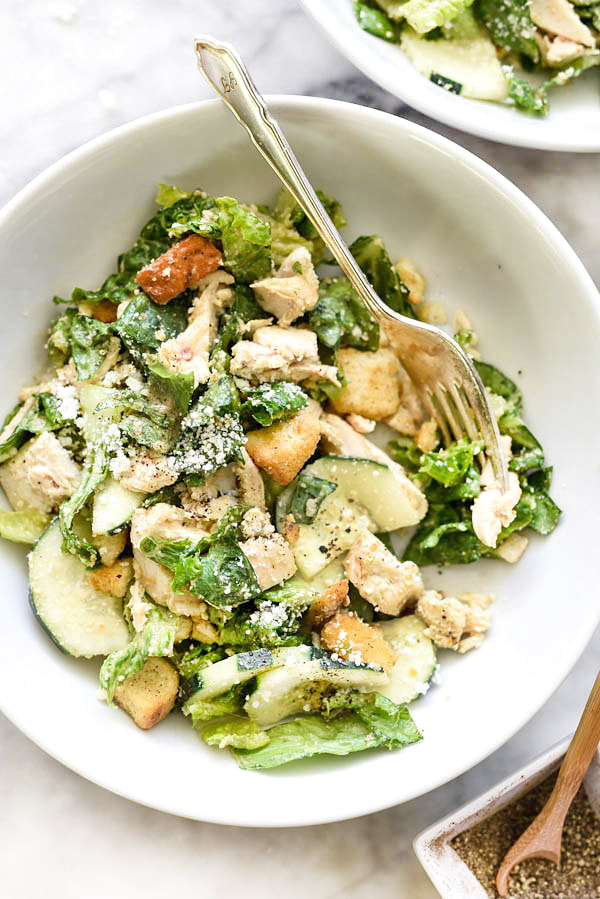

Tradition and great flavour are the heart and soul of Irish cuisine. Since 2015 Koffee and Kale has believed in sharing those traditions. We invite the people of Dublin to take part in sharing- with us and with each other—the K&K way of dining. If you follow along with our menu, you will experience tasty breakfast and brunch creations, enjoy our lunch menus which are inspired to tantalise the taste buds. With the help of your server, enjoy the most important ingredients in your dining experience: food, friends, and family.
Owner Kevin Sookun created K&K in 2015 with the inspiration to serve a funky style of food, using simple locally sourced ingredients whilst serving it all in a fun relaxed way.
Our location; 21B, Hill Street, Dublin 1. Our Deli Bar and our catering division offer an eclectic mix of our homemade, locally sourced foods and great 100% Arabica Speciality coffee. From our K&K family to yours, we invite you to sit back and relax while filling yourself with more than food. Eat better and healthier. Freshly made food that happens to be good for you! Meals to take away or delivered to your door.
At Koffee+Kale our aim is simple:
To sell great coffees, make deadly salads and massive sandwiches. And the best bit is... it only tastes expensive!
Our salads have a middle eastern twist to them and many are raw, gluten free... and go to church every Sunday.
Our sandwiches are a little naughtier...
They are packed full of ingredients like steak, applewood smoked cheddar & caramelised onion and pulled pork with cajun slaw.
Typical Sample Menu Below - Changes Seasonally.
(Or when we are too hungover to peel something!)
Come visit or contact us to see what's on offer today.
Get in touch to have some samples delivered to your office.
Carefully sourced. Lovingly created. Quality, variety and value for money. These three things are fundamental to great food at Koffee+Kale. That's why when creating our new menu we searched high and low to find real foodie experts and the very best producers available. Frankly we know that you wouldn't have it any other way. Which is great, because neither would we.
